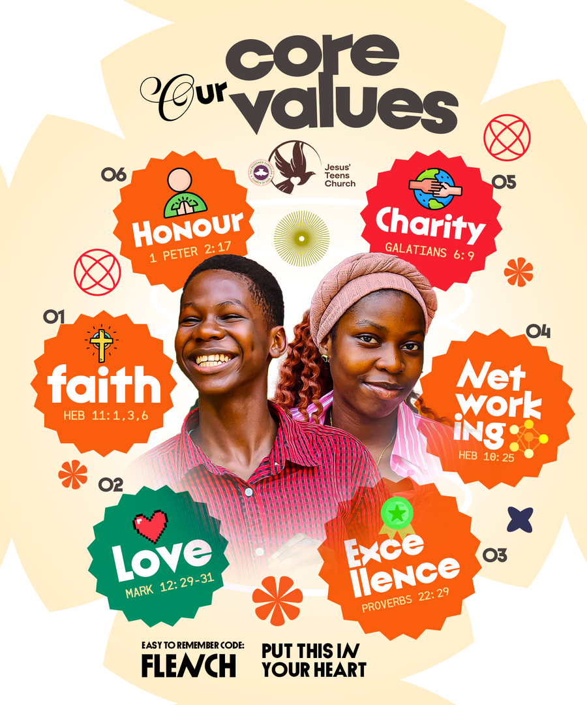
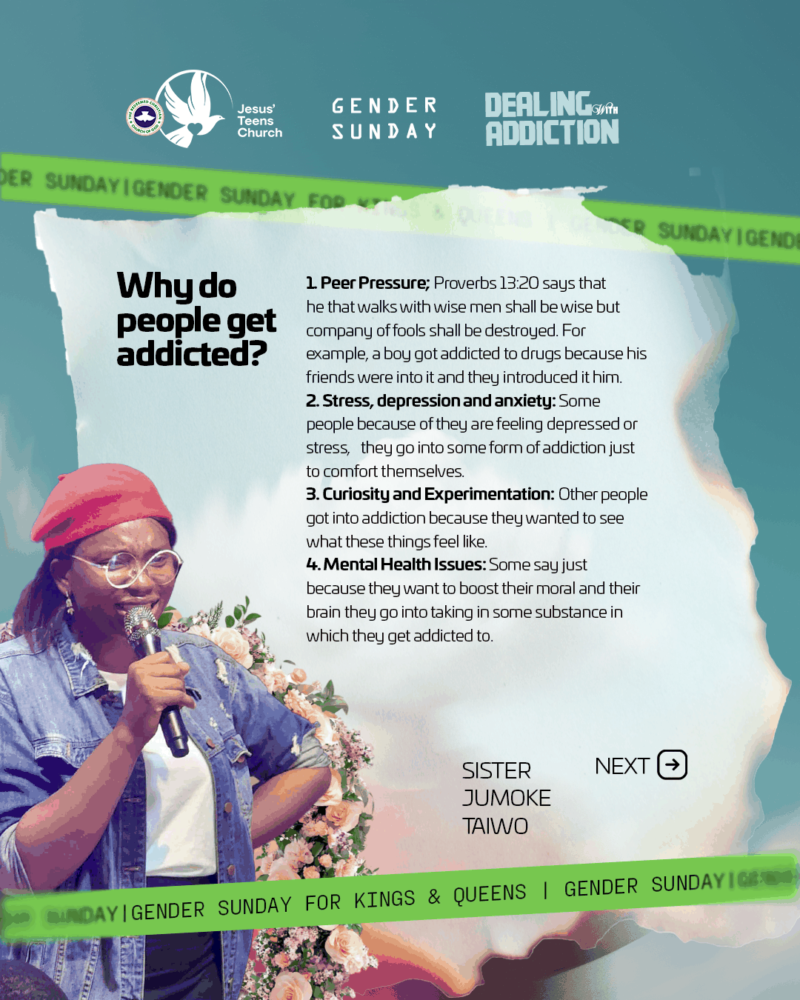
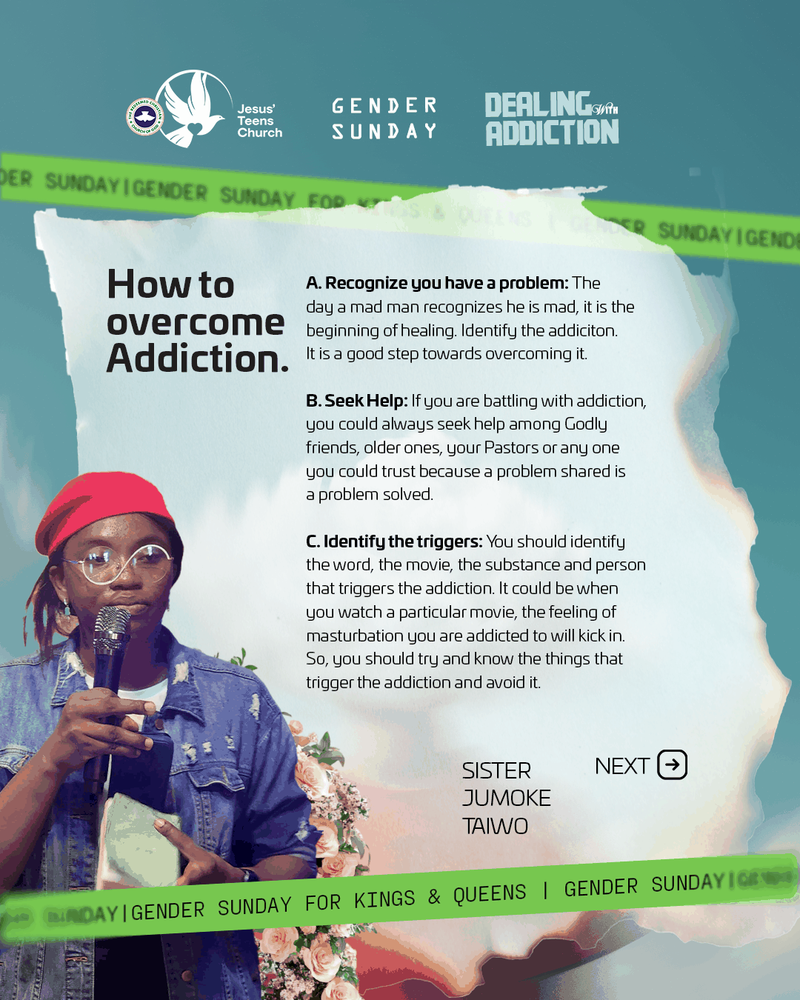
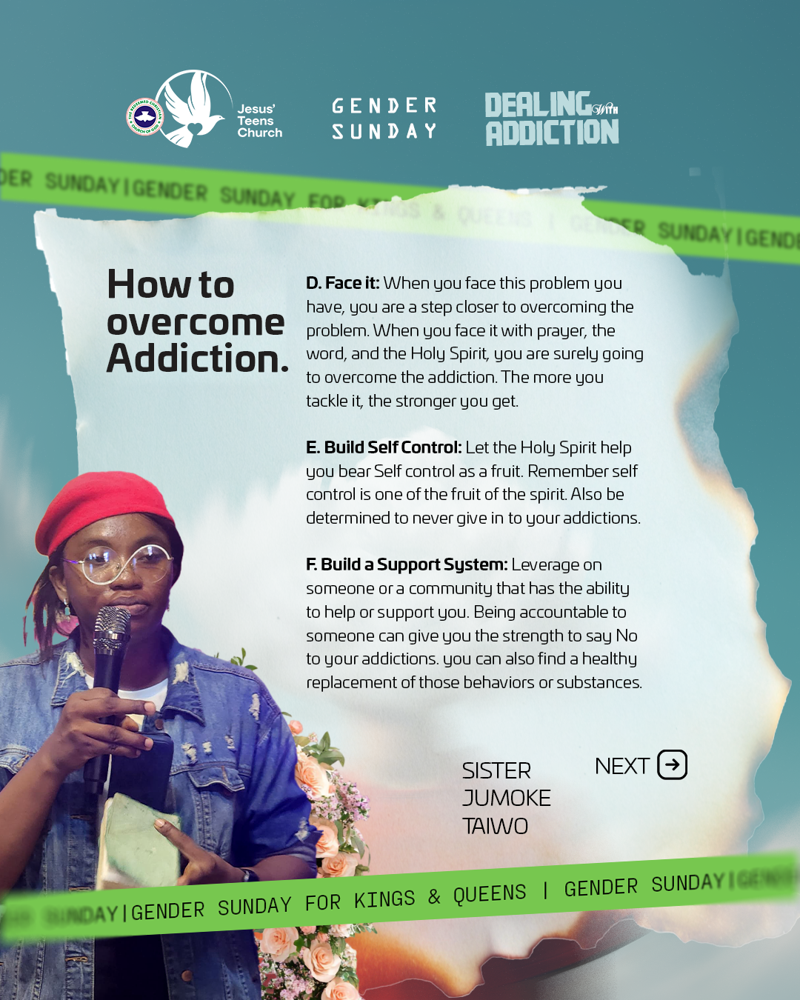
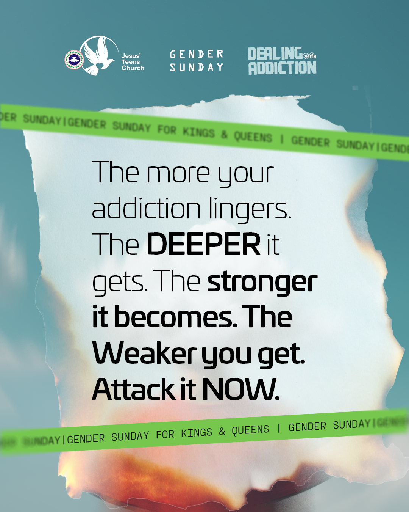
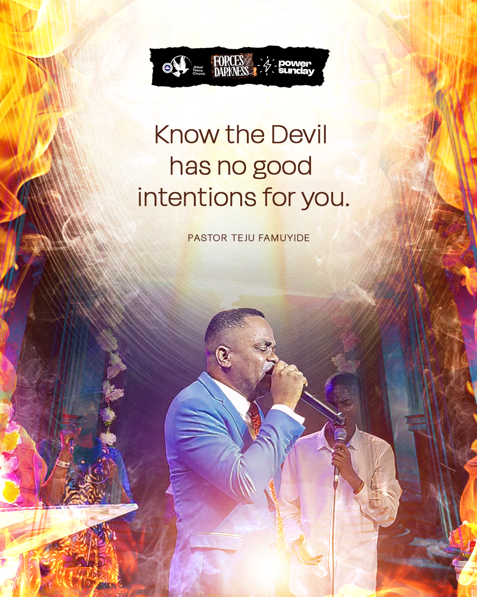

Learning Together
Sunday School
Thoughtful classroom moments, Bible study sessions, and practical teaching times.
/WhatsApp Image 2026-04-30 at 00.48.39.jpeg)
/WhatsApp Image 2026-04-30 at 00.49.24 (1).jpeg)
/WhatsApp Image 2026-04-30 at 00.49.24.jpeg)
/WhatsApp Image 2026-04-30 at 00.49.25 (1).jpeg)
/WhatsApp Image 2026-04-30 at 00.49.25 (2).jpeg)
/WhatsApp Image 2026-04-30 at 00.48.39 (2).jpeg)
/WhatsApp Image 2026-04-30 at 00.48.48.jpeg)
/WhatsApp Image 2026-04-30 at 00.48.50.jpeg)
/WhatsApp Image 2026-04-30 at 00.49.23 (1).jpeg)
A vibrant and welcoming space where teenagers grow in faith, discover their purpose, and build meaningful friendships. Our teen church is designed to help young people connect with God in a real and relatable way, through engaging teachings, uplifting worship, and a supportive community.
Our Core Values
These values shape how we grow, serve, worship, and support one another as a teen church community.

It's our responsibility that God is glorified and exalted in Jesus Teens Church in our worship. We help teenagers experience the power of God through spirit-filled music, fusing the Word of God with music.
Our pen speaks life through articles, write-ups, poems, interviews, and artworks that are easily communicated to bless the congregation.
We watch, protect, and cater for the wellness of our members, ranging from spiritual to practical support, while also executing projects that move the church forward.
We are locally known as ushers. We conduct services and ensure strict adherence to correct etiquette and proper order during services and special programs.
Through the inspiration of the Holy Spirit, we plan and coordinate programs and events organized to bless teenagers.
We skillfully tell stories with drama, arrange dance moves, and use other presentations to minister, inspire, and motivate members.
We lead the church to grow in spiritual capacity, helping members meditate on the Word and rise higher in prayer.
We are the sanctuary keepers, presenting the church in an attractive and clean way for programs and events.
We take the church online, reaching teenagers with the light of the gospel using the right content, while also ensuring sound is at its best during services.
We manage and track the growth of the church through visitation, follow-up, and helping new members become family over time.
| Worker's Meeting | 8:00-8:30am |
| Sunday School | 8:30-9:15am |
| Program | Day | Time |
|---|---|---|
| Thanksgiving Service | 1st Sunday | 9:00-11:30am |
| Variety Sundays | 2nd & 3rd Sundays | 9:00-11:30am |
| Power Sunday | 4th Sunday | 9:00-11:30am |

Variety Sunday
Why people get addicted, how addiction grows, and practical godly steps toward healing and freedom.



Purity Series
A call for teenagers to live with holiness, discipline, bold faith, and intentional devotion to God.

Special Valentine Service
Understanding the difference between godly love and lust, and learning to choose purity, service, and truth.


Power Sunday
Teaching on spiritual warfare, the categories of darkness, and how believers stand in light, prayer, and authority.




Moments of growth, worship, learning, and fun shared by the Jesus Teens Church family.
Learning Together
Thoughtful classroom moments, Bible study sessions, and practical teaching times.
Outdoor Adventure
A refreshing day outdoors filled with laughter, bonding, discovery, and shared memories.
/WhatsApp Image 2026-04-30 at 00.49.33 (1).jpeg)
/WhatsApp Image 2026-04-30 at 00.49.33.jpeg)
/WhatsApp Image 2026-04-30 at 00.49.33 (2).jpeg)
/WhatsApp Image 2026-04-30 at 00.49.34.jpeg)
/WhatsApp Image 2026-04-30 at 00.49.35.jpeg)
/WhatsApp Image 2026-04-30 at 00.49.34 (1).jpeg)
Praise Atmosphere
Spirit-filled singing, heartfelt worship, and joyful expressions of faith in service.
/WhatsApp Image 2026-04-30 at 00.48.36.jpeg)
/IMG_E3128.JPG)
/IMG_E3142.JPG)
/IMG_E3122.JPG)
/IMG_E3144.JPG)
/edited 2.JPG)
/IMG_E3127.JPG)
/Edited 3.JPG)
/IMG_3130.JPG)
Community Life
Portraits, smiles, and beautiful snapshots that reflect friendship and confident young faith.
/WhatsApp Image 2026-04-30 at 00.49.21.jpeg)
/WhatsApp Image 2026-04-30 at 00.49.22.jpeg)
/WhatsApp Image 2026-04-30 at 00.49.23 (2).jpeg)
/WhatsApp Image 2026-04-30 at 00.49.27.jpeg)
/WhatsApp Image 2026-04-30 at 00.49.29.jpeg)
/WhatsApp Image 2026-04-30 at 00.49.26.jpeg)
/WhatsApp Image 2026-04-30 at 00.49.31.jpeg)
/WhatsApp Image 2026-04-30 at 00.49.19 (1).jpeg)
/WhatsApp Image 2026-04-30 at 00.49.31 (1).jpeg)
/WhatsApp Image 2026-04-30 at 00.49.20.jpeg)
/WhatsApp Image 2026-04-30 at 00.48.58.jpeg)
/WhatsApp Image 2026-04-30 at 00.49.25.jpeg)